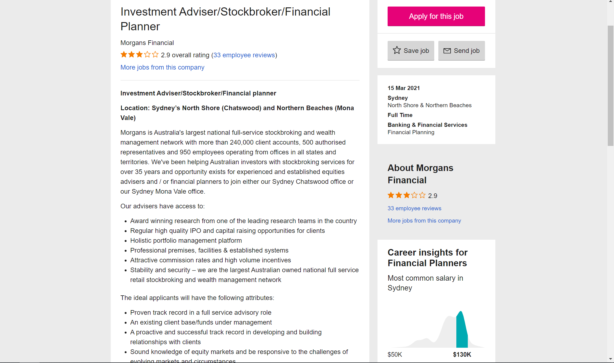

My Ideal Job

The ideal job I have chosen is an Investment Adviser, stockbroking, and financial planning position at the financial institution ‘Morgan’s Financial’. The position will consist of the broker managing client’s investments in financial markets hedging risks and diversifying portfolios to ensure the clients of Morgans Financial maximise their profits. The position will also require advising clients on what investments should be made given their portfolio and risk appetite as well as not going beyond the means of the client. The third area of work is financial planning akin to investment advising, financial planning will require the broker to assess the client’s capital and goals which they may have for there future and construct a relevant means of investing and spending their capital.
This position will require me to develop a wide array of skills and qualifications, the main skill would be the art of selling a product to the clients which is worth their potential investment. I will assumingly also need to have a few years of experience in the corporate sector operating as an assistant to a broker or possibly bookkeeping and administration work. Existing clientele will be favourable when starting this position as the clients will follow a trusted broker which they have spent years of experience with and will require somewhat of a personal connection and interaction with my clients working for there means just as my own. Experience in the markets and understanding trends will be key to my success which will develop over time. IT knowledge will play a fundamental role as understanding spread sheets and using computer programming will be key in understanding trends and finding appropriate assets for my clients to buy. IT knowledge of programming and usage of applications such as access and excel will help in processing information and bookkeeping.
Currently however, my skills are limited yet are beginning to be established. I have qualities of hard work determination from completing university work and working on my personal investment portfolio. I transfer the skills of dedication and discipline from other aspects of my life such as keeping physically fit and use these skills to help work towards the goals I have in place now. The road map I have set out to obtain the skills, qualifications and experience I need is as follows; firstly, finishing my bachelor’s degree in economics and finance at RMIT as this will set the foundation for future experience. During my final year of university, I will begin to seek out non-paid internship roles at brokerage companies to establish some experience in the field of work I am pursuing, while working my way through the lower levels of experience I will fine tune my skills of teamwork, and commitment to my job.